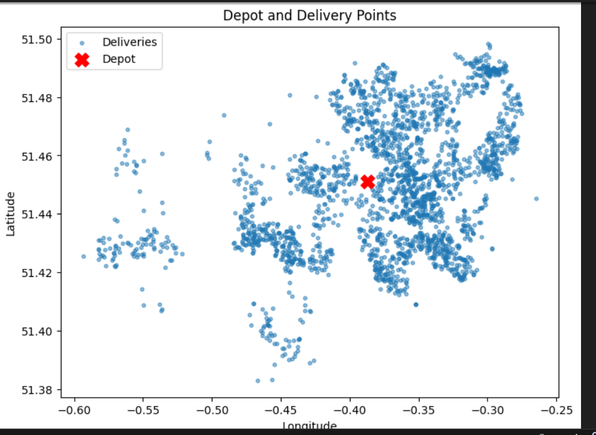
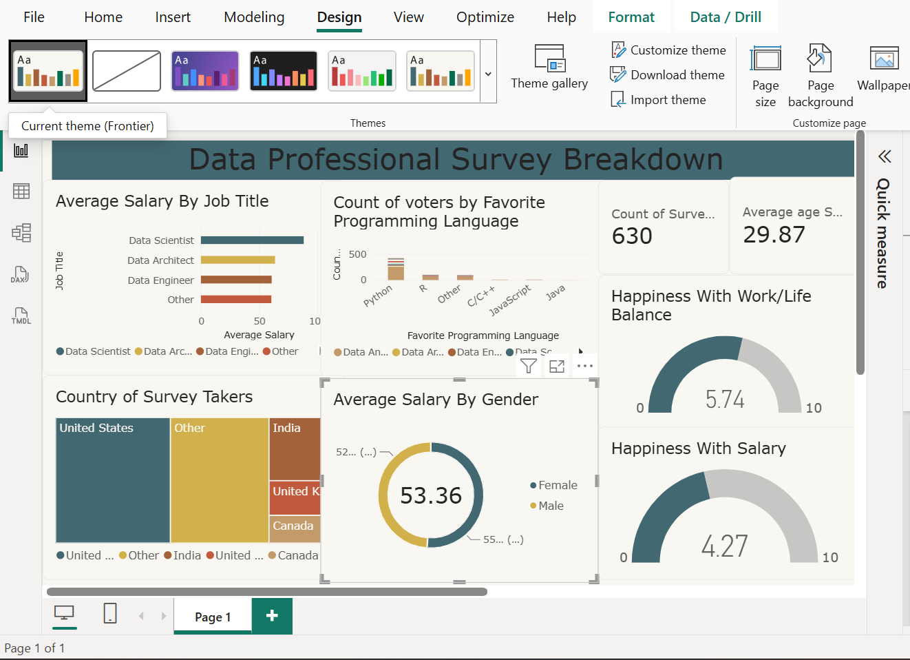

Developed a data-driven route optimisation project focused on improving Royal Mail's Sunday delivery operations. Using Python, Pandas, Scikit-learn,
Google OR-Tools, QGIS and OpenStreetMap data, I explored delivery patterns, processed geographical data
and applied optimisation techniques to improve delivery route planning. The project considered real-world operational constraints,
including delivery locations, driver availability, working hours and geographical distribution, demonstrating how data science
and geospatial analysis can support more efficient logistics operations.

Conducted an exploratory data analysis project examining global population trends across different countries and regions.
Using Python and Pandas, I performed data cleaning, manipulation and
analysis to explore population distributions, identify patterns and compare population changes across countries.
The project demonstrates practical data analysis skills and the ability
to transform raw datasets into meaningful insights that support a better understanding of global population trends.
Developed a Python web scraping project to extract product information from Amazon using BeautifulSoup and Requests.
The project involved retrieving, parsing and organising product data from web pages, demonstrating practical skills
in web scraping, HTML parsing and automated data collection. The extracted information can be used for further
data analysis, market research and exploring product trends.

Developed a data analysis project using Microsoft Power BI to transform raw data into meaningful insights through interactive visualisations and dashboards.
The project involved importing, cleaning and transforming data, exploring datasets, creating visual reports and identifying trends and patterns.
It demonstrates practical skills in data analysis, data visualisation and presenting information in a clear and accessible format.
Developed a binary classification model using Logistic Regression to predict whether an iris flower belongs to the Iris Setosa
species based on its physical measurements. Using the famous Iris dataset, containing 150 samples and four features
(sepal length, sepal width, petal length and petal width), I explored the data, prepared the features and trained
a machine learning model to distinguish Iris Setosa from other iris species. The project demonstrates practical skills in
supervised machine learning, binary classification and predictive modelling.